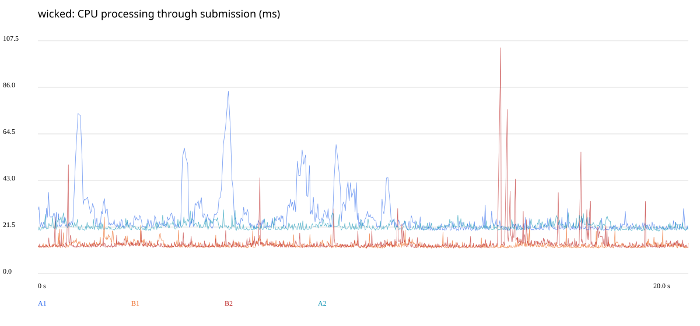
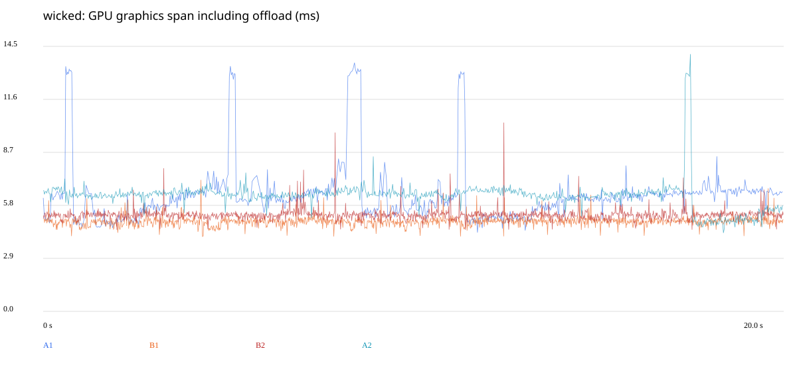
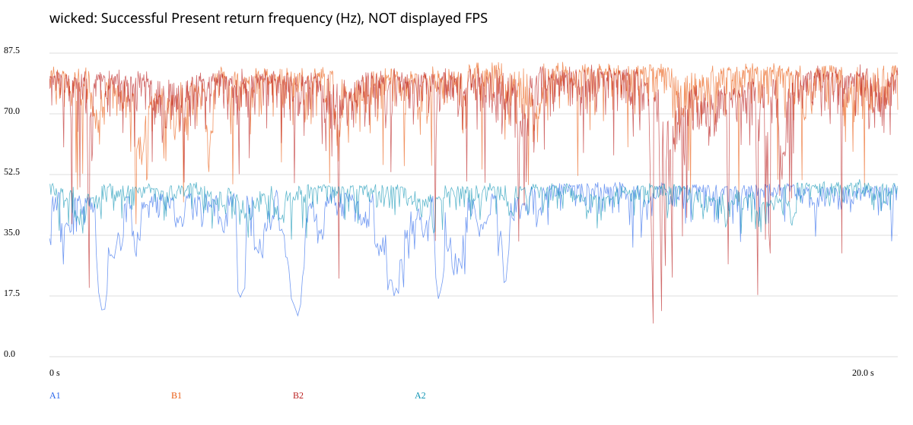
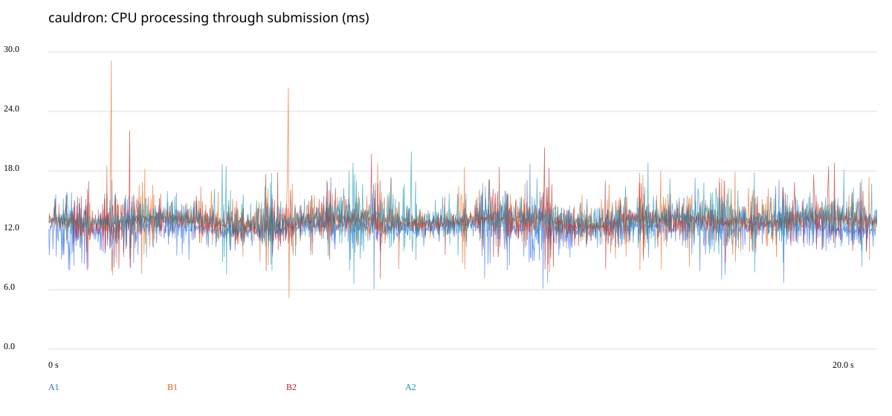
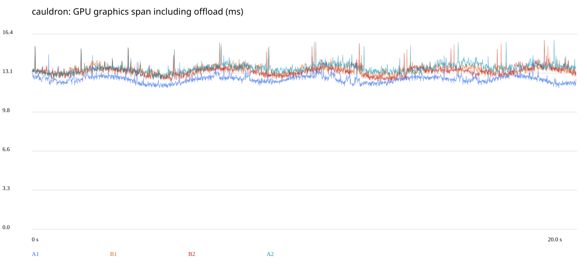
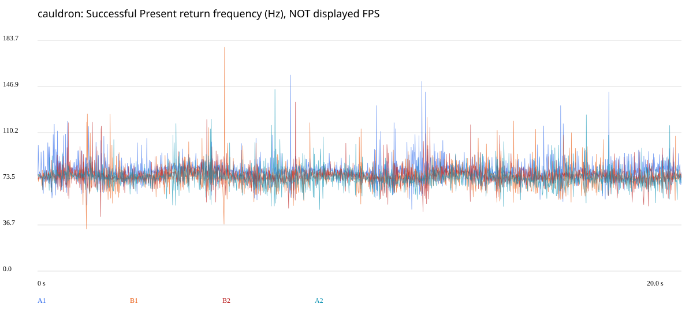

Wicked: 43,32 → 74,84 Present/с (+72,7%). Cauldron: повторяемое ускорение не подтверждено.
Present/с — частота возвратов Present, не измеренный FPS монитора. Цель 120 FPS. Все выбросы сохранены. GPU-упрощения не применились: диагностические захваты отклонены по лимитам. Перенос CPU работает только через адаптер Wicked.
| Запуск | CPU, мс | GPU, мс | Present/с | Present p99, мс |
|---|---|---|---|---|
| A1 | 24.471 | 6.336 | 40.83 | 56.764 |
| B1 | 13.092 | 4.922 | 76.30 | 18.813 |
| B2 | 13.621 | 5.296 | 73.38 | 26.672 |
| A2 | 21.816 | 6.327 | 45.82 | 27.320 |



| Запуск | CPU, мс | GPU, мс | Present/с | Present p99, мс |
|---|---|---|---|---|
| A1 | 12.256 | 12.591 | 79.33 | 16.696 |
| B1 | 13.011 | 13.349 | 74.80 | 17.553 |
| B2 | 12.974 | 13.271 | 75.25 | 17.346 |
| A2 | 13.123 | 13.511 | 73.89 | 17.571 |



Температура Cauldron достигала 87 °C; частоты менялись. Небольшие разницы не отделены от изменения аппаратного режима. На Wicked GPU-перенос проверен на 517 кадрах, включая отключение.